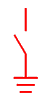
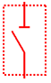
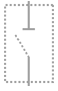
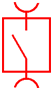
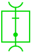
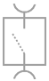
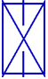
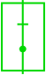
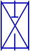

Author: Jan Bercic
Date: 27. July 2007
This widget displays a switch, i.e. a control that displays different graphics for different states.
| Property | Name in SwitchModel | Identifier | Description |
| Transparent Background | PROP_TRANSPARENT | transparency |
If true, the background will be transparent. |
| Switch Type | PROP_TYPE | switch.type |
Type of the displayed switch. |
| Switch State | PROP_STATE | switch.state |
Specifies the state in which ste switch currently is. |
| Rotation | PROP_ROTATE | rotation |
The angle (in degrees) for which the displayed graphic is rotated. 0 means vertical, rotation is clock-wise. |
| Line Width | PROP_LINEWIDTH | linewidth |
Width of the lines the graphic is drawn with. |
| AUS/AUF=0 | EIN/ZU=1 | GESTOERT=8 | SCHALTET=6 | UNKNOWN=* | |
| Erdtrenner |  | |
| | |
| Trennschalter | | |
| | |
| Lasttrennschalter |  | |
|  | |
| Schaltertrennstelle |  |  |  | |
|
| Leistungsschalter | | |
|  | |
| Leistungstrennschalter | |  |  | |  |
To add a new type, you have to define a plugin.
This plugin should extend the org.csstudio.sds.cosywidgets.switch extension point and should implement the
org.csstudio.sds.cosywidgets.common.ICosySwitch interface.
Functions in the ICosySwitch interface:
void construct(Figure fig, int w, int h) initializes the switch painter. fig is
the owning figure, width is the initial width, h is the initial height.void resize(int neww, int newh) is called when the owning figure is resized. neww is the new width,
newh is the new height.void paintSwitch(Graphics gfx, int state) paints the switch. gfx is the draw2d graphics context,
state is the state of the switch that is supposed to be drawn. If the switch painter does not support this state,
its image should reflect this - the switch figure will make no checks if the state is valid or not.void paintUnknown(Graphics gfx) paints the image representing an unknown state. gfx is the drawd2
graphics context.To add a new state, it has to be defined in RefreshableSwitchFigure. Add a public static int
declaration of the new state as its index and add a color in the static initialzation block to the state_colors
hash map. For further information, examine the appropriate sections of code at the beginning of RefreshableSwitchFigure.
SwitchModelFactoryNothing special here, this file is almost the same for all widgets.
SwitchModelThis class defines all the properties and provides functions for getting their values (the get* functions).
SwitchEditPartThis performs initial property synchronisation between the figure and the model (the doCreateFigure function)
and registers property listeners. These listeners all just call functions in the figure, which set internal variables.
RefreshableSwitchFigureThis is where all the drawing is done. The main class contains functions that outsiders can use to set or get
internal variables (the set* and get* functions). The figure keeps an internal variable, the
switch_painter, which represents the current switch type. Each time the type is changed, the appropriate plugin
is looked up by the SwitchPlugins class and instantiated. Because the extensions are always constructed
using the default constructor, the switch painter is initialized with its construct function.
The state_colors hash map holds information about colors for each possible state. The states are defined
as integer constants.
fillShape draws the background, if not set to transparent.outlineShape draws the switch using the current switch painter, possibly after making the desired rotation.
This function also sets the current color and line width, so the painter only needs to worry about the shape itself.